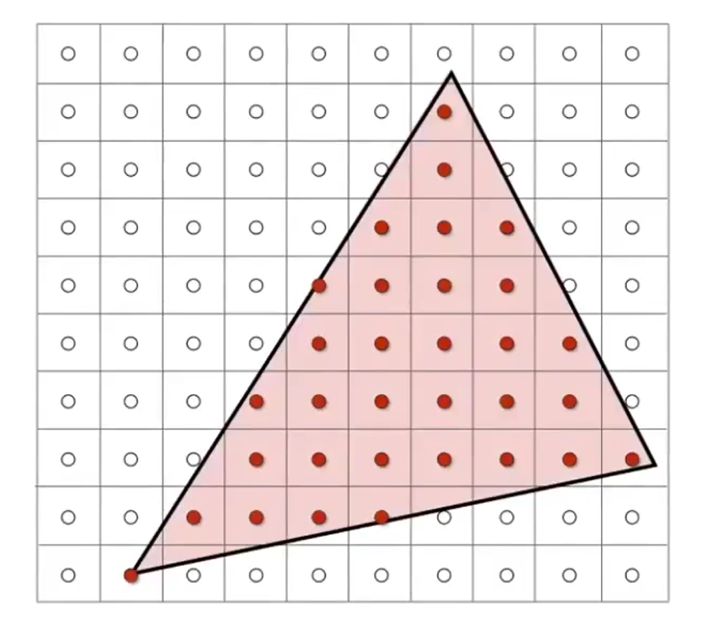
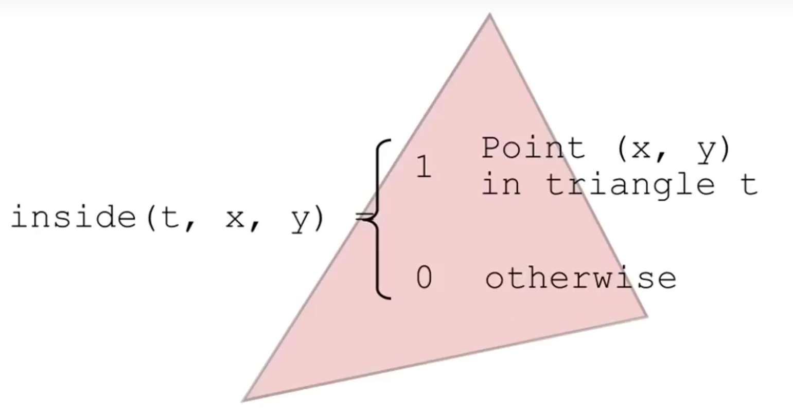

Games101 - Lecture05 Rasterization 1 (Triangles)
Rasterization 1 (Triangles)
1. Canonical Cube to Screen
什么是屏幕？

屏幕一般被定义为一个二维数组，从(0,0)开始，每个像素的坐标是其所在方块的左下角的坐标值。
如何将标准立方体映射到屏幕上？(视口变换)
改变换与Z轴无关；
将 \([-1,1]^2\) 变换到 \([0,width]\times[0,height]\) ： \[ M_{viewport}= \begin{pmatrix} \frac{width}{2} & 0 & 0 & \frac{width}{2} \\ 0 & \frac{height}{2} & 0 & \frac{height}{2} \\ 0 & 0 & 1 & 0 \\ 0 & 0 & 0 & 1 \end{pmatrix} \]
2. Triangles MEshes
为什么三角形会在图形学中得到广泛应用？
- 三角形是最基本的多边形；
- 可以将其他多边形分解为三角形；
- 三角形内部一定是平面的；
- 三角形内外的定义十分清晰；
- 定义三角形三个顶点的属性，可以有规律地对三角形内部地点地属性进行插值（重心插值）；
一种简单的光栅化的方法：采样
什么是采样？
给定一个连续的函数，对任意一个点询问该点的函数值是多少。采样是将一个函数离散化的过程。
\(\Rightarrow\)
1
2
3
4
5for(int x = 0; x < xmax; x++){
for(int y = 0; y < ymax; y++){
image[x][y] = inside(tri, x + 0.5, y + 0.5);
}
}Bounding Box! （AABB）
采样时有许多优化方式，最简单的一种就是 Bounding Box，通过三个顶点的坐标判断循环的范围，减少无效计算。

Games101 - Lecture05 Rasterization 1 (Triangles)
https://memo2586.github.io/2023/12/05/Games101-Lecture-05-Rasterization-1-Triangles/